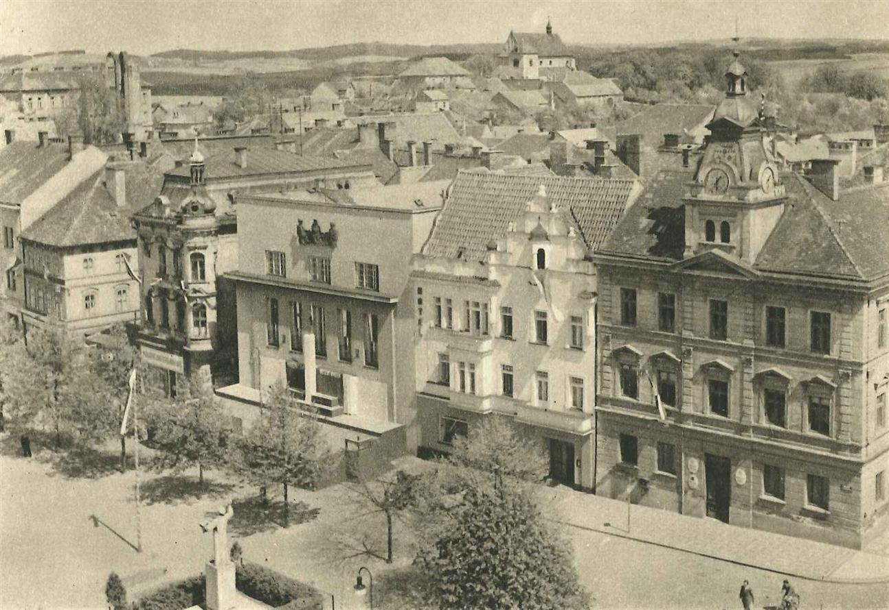

Mírové náměstí – Horní Benešov
Horní Benešov je jedním z nejstarších hornických měst v českém Slezsku. První písemná zmínka pochází z roku 1226, kdy se zde začala rozvíjet těžba stříbra. To přivedlo do oblasti osadníky, řemeslníky i obchodníky, a tím vzniklo město s typickým středověkým půdorysem — centrálním náměstím a pravoúhlou sítí ulic.
